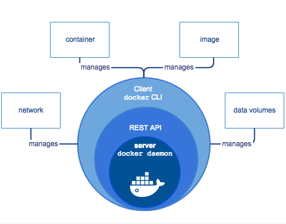

Docker操作指南
命令行
# 命令的选项以及具体用法可以使用 docker help XX 查询
docker attach 将标准输入输出错误流链接到运行的容器中
docker build 根据 dockerfile 构建镜像
docker checkpoint AP1.25+ 可用，仍在测试之中，构建检查点
docker commit 从容器构建镜像
docker config API1.30+ 可用，构建配置文件
docker container 管理容器
docker cp 在宿主机与容器之间复制文件
docker create 创建容器但不运行
docker deploy 部署新堆栈或更新现有堆栈
docker diff 检查容器文件系统上的文件或目录的更改
docker events 从服务器获取实时事件
docker exec 在正在运行的容器中运行命令
docker export 将容器的文件系统导出为tar存档
docker history 显示镜像的历史记录
docker image 管理镜像
docker images 列出所有镜像
docker import 从 tarbll 导入内容以创建文件系统镜像
docker info 显示 docker 系统信息，包括镜像和容器数
docker inspect 获取容器/镜像的元数据
docker kill 杀掉一个运行的容器
docker load 从 tar 存档或 STDIN 加载镜像
docker login 登录到一个 Docker 镜像仓库，如果未指定镜像仓库地址，默认为官方仓库 Docker Hub
docker logs 获取容器的日志
docker manifest 管理镜像清单
docker network 管理网络（docker network ls DRIVER：None[无网卡]/Host[宿主机网络]/Bridge[网桥]）
docker node API1.24+ 可用，管理 Swarm 节点
docker pause 暂停一个或多个容器中的所有进程
docker plugin API1.25+ 可用，管理插件
docker port 列出指定的容器的端口映射，或者查找将 PRIVATE_PORT NAT 到面向公众的端口。
docker ps 列出容器信息
docker pull 从镜像仓库中拉取或者更新指定镜像
docker push 将本地的镜像上传到镜像仓库,要先登录到镜像仓库
docker rename 重命名一个容器
docker rm 删除一个或多个容器
docker rmi 删除本地一个或多少镜像。
docker run 创建一个新的容器并运行一个命令
docker save 将指定镜像保存成 tar 归档文件
docker search 从 Docker Hub 查找镜像
docker secret API1.25+ 可用，管理 docker secret
docker service API1.24+ 可用，管理服务
docker stack API1.25+ 可用，管理 docker 栈
docker start 启动一个或多个已经被停止的容器
docker stats 显示一个或多个容器资源使用情况统计信息的实时流
docker stop 停止运行一个或多个正在运行的容器
docker swarm API1.24+ 可用，管理 swarm
docker system 管理 docker 系统
docker tag 创建一个引用 SOURCE_IMAGE 的标记 TARGET IMAGE
docker top 显示容器的运行进程
docker trust 管理 docker 镜像的信任
docker unpause 取消暂停一个或多个容器中的所有进程
docker update 更新一个或多个容器的配置
docker version 显示 docker 的版本信息
docker volume 管理 volume
docker wait 等待直到一个或多个容器停止，打印他们的退出代码
搭建 Docker 环境
- 安装与配置 Docker
# 安装 Docker
yum install docker-io -y [直接yum安装]
docker -v [查看版本]
service docker start [启动docker]
chkconfig docker on [设置开机启动]
# 配置 Docker
[因为国内访问 Docker Hub 较慢, 可以使用腾讯云提供的国内镜像源, 加速访问 Docker Hub]
echo "OPTIONS='--registry-mirror=https://mirror.ccs.tencentyun.com'" >> /etc/sysconfig/docker
systemctl daemon-reload
service docker restart
- Docker 的简单操作
# 下载镜像
docker pull centos [下载一个官方的 CentOS 镜像到本地]
docker images [下载好的镜像就会出现在镜像列表里]
# 运行容器
docker run -it centos /bin/bash [生成一个 centos 镜像为模板的容器并使用 bash shell]
mkdir -p /data/simple_docker [ 在容器内执行任意命令, 不会影响到宿主机]
ls /data [ 可以看到 /data 目录下已经创建成功了 simple_docker 文件夹]
exit [退出容器]
# 保存容器
docker ps -a [查看所有的容器信息， 能获取容器的id]
docker commit -m="备注" 你的CONTAINER_ID 你的IMAGE [然后执行如下命令[?]，保存镜像：(请自行将 -m 后面的信息改成自己的容器的信息)]
基础概念
容器：容器提供一个干净的环境给应用程序，容器保护其内部的资源，不同的容器之间存在着隔离。由于这种特性，容器能够很好的对资源进行管理，分发。
Docker：Docker 不是一种容器，更多的是一种管理程序，它隐含了底层容器构建过程，直接提供容器的服务。它简化了软件安装的过程，让用户更关注于软件的服务和使用以及分发。而且它能保证不同平台中的环境一致性。
描述：
a. Docker 能够对容器进行很好的管理，并且能够限制容器资源。Docker 对容器环境的隔离包括文件系统，网络，进程，以及进程之间的通信。Docker对容器资源的限制包括 CPU，内存以及磁盘 IO Docker 在容器的基础上可以轻量化应用环境。并且环境的管理是可移植的，容器可以打包成镜像。然后放置到镜像仓库之中（如 Docker hub ）。
b. Docker 不是虚拟机，它直接和内核打交道，不提供虚拟内核。这代表 Docker 的容器消耗的资源十分少，部署会十分迅速
c. Docker 以及容器的存在提供了一个平台，它能将底层服务器到上层应用之间的层次完全整合，成为一整个云平台。这使得用户可以更关注于应用之上，其余可以交付给云平台（基于 Docker 容器技术）。 Docker 同时也带来了不同平台的标准化，包括镜像，环境，基础设施以及容器基本特性
Docker 基础架构: 一般而言，Docker 通常指的的是 Docker Engine（后称 DE ）。 DE 的架构形式是 Docker Client ，REST API 以及 Server 。如下图，Server 使用 Docker daemon 对容器进行管理，它暴露 REST API 给 Client 。 Client 使用 Docker CLI（即命令行工具）来与 Docker daemon 进行通信。当然，也可以直接使用 REST API 进行通信。 
DE通常包括五个组件
a. Docker Daemon 是 Docker服务进程，作为服务器管理 Docker 的对象(容器，镜像，网络，存储卷等)，它长期运行，监听 API 请求
b. Docker Client 是 Docker客户组件，提供 CLI 与服务端通信。发送用户请求，可以使用 CLI ，也可使用 API
c. Docker Registries 是镜像仓库，用于存储，获取镜像。 Registriy 分公有和私有，默认 Registriy 是 Docker Hub ，在指令加限定词则会到私有或者其他共有仓库获取镜像。使用 docker push 会将镜像发送到指定 Registriy 中
d. Docker Image 即镜像组件，提供镜像处理。镜像提供创建容器的模板，并且镜像是只读的。 Image 使用 Dockerfile 来定义构建镜像时的步骤。 Dockerfile 是构建镜像的文件，它的每条指令都会让 Image 构建镜像。镜像是一层一层写入的，同时它还有一个 json 文件作为元数据存在。 Dockerfile 每一条指令都会在镜像中写入一层，其内容有无，是否修改 json 文件取决于指令。每写完一层都会将该层改为只读，之后加入一层读写层，用于添加新层以及读取镜像。
e. Docker Containers 即容器，提供容器管理细节。 Docker 的容器是镜像的实例 Clinet 的 CLI 和 API 都可以对容器进行管理。容器可以连上多个网络，可被分配存储，可用于构建新镜像。通过配置参数可以配置容器运行。容器在创建后 Docker 会给容器分配可读写层，所有对于已运行的容器的文件操作都会在这个可读写层上进行。同时 Docker 为容器创建网卡并将该容器连接到默认网络上，这一步包括为容器分配 IP 地址。容器内部程序运行完后容器会停止运行，但是不会被删除。(通常获取镜像有三种方式：Docker run [先从本地获取镜像，若没有则去镜像仓库获取，然后运行]/Docker pull[直接从镜像仓库获取，然后保存到本地，不运行]/Docker bulid[则直接在本地构建镜像])
Docker 存储方案
a. Volume ，最常用且推荐的数据持久化方案。 Volume 被放在宿主的文件系统中并由 Docker 管理。非 Docker 进程不应该（不是不能）对这部分文件进行修改。 Docker 提供 Volume 指令，并且 Docker run 的时候添加选项挂载 Volume 时，若 Volume 不存在则会自动创建 Volume 。指令具体如下
docker run -d --name test --mount source=myvol,target=/app nginx:latestb. Bind Mount ，另一种持久化方案，它可以放在宿主机文件系统的任何地方，甚至是需要 root 权限的地方。非 Docker 进程可以对这部分文件修改（但是不推荐）。虽然 Bind Mount 性能微高于 Volume ，但是更推荐 Volume。
c. Tmpfs Mount ，是一种临时存储方案，它将文件保存在宿主机的内存当中，不写入系统，关机则消失。
Docker 网络
Docker 会在被安装后自动创建三个默认网络，它们分别为 Bridge，None，以及 Host。使用 docker network ls 可以查看可用的网络。创建容器时，可以使用 --network 选项设置需要连接的网络。
a. None 是无网卡，None 设定之后 Docker 不会给该容器创建网卡，并且之后 Docker 无法直接对其进行网络配置。只有进入容器中才可以进行网络配置与查看
b. Host 是直接使用宿主机的网络，它解除了网络隔离，直接占用宿主机的端口。这样也可以直接使用宿主机的网络访问容器。同时 Docker 也无法直接对host进行网络配置
c. Bridge 则是网桥，创建网络的默认方式。当 Docker 启动时，会自动在主机上创建一个名为 Docker0 虚拟网桥，它会在挂载到它的网口之间进行转发。当我们创建一个新的容器时，同时会创建了一对 veth pair 接口（即对等接口，当数据包发送到一个接口时，另外一个接口也可以收到相同的数据包）。这对接口一端在容器内，即 eth0；另一端在本地并被挂载到 Docker0 网桥，名称以 veth 开头。通过这种方式，主机可以跟容器通信，容器之间也可以相互通信。
docker 环境使用
- ssh 连接
建议通过 ssh 工具连接 docker 虚拟机，如 xshell，scrt 等工具 默认内建了一个 sudo 用户
用户名: docker
密码: xxxx
注 : root 用户没有密码，可以通过 docker 用户直接 sudo 成 root 后修改 root 密码
- 编写Dockerfile
这里使用 maven3+tomcat8.5 作为基础镜像，将以下内容保存为 Dockerfile
FROM maven:3.3.3
ENV CATALINA_HOME /usr/local/tomcat
ENV PATH $CATALINA_HOME/bin:$PATH
RUN mkdir -p "$CATALINA_HOME"
WORKDIR $CATALINA_HOME
ENV TOMCAT_VERSION 8.5.34
ENV TOMCAT_TGZ_URL https://www.apache.org/dist/tomcat/tomcat-8/v$TOMCAT_VERSION/bin/apache-tomcat-$TOMCAT_VERSION.tar.gz
RUN set -x \
&& curl -fSL "$TOMCAT_TGZ_URL" -o tomcat.tar.gz \
&& tar -xvf tomcat.tar.gz --strip-components=1 \
&& rm bin/*.bat \
&& rm tomcat.tar.gz*
EXPOSE 8080 CMD ["catalina.sh", "run"]
- build 镜像
docker build -t base-tomcat-maven .
docker build -t liuhangbiao/base-tomcat-maven:0.0.1 .
- 上传至 hubdocker 镜像仓库
docker login
# 构建镜像
docker build -t liuhangbiao/base-node:0.0.1 .
# 运行
docker run -t -i docker build -t liuhangbiao/base-tomcat-maven:0.0.1 . /bin/bash
# 打tag
docker tag 9ec liuhangbiao/base-tomcat-maven:0.0.2
# 发布
docker push lliuhangbiao/base-tomcat-maven:0.0.2
//或
docker tag base-tomcat-maven registry.xxx.com/liuhangbiao/base-tomcat-maven
docker push registry.xxx.com/liuhangbiao/base-tomcat-maven
# 镜像空间请替换成分配的指定空间名，这里的镜像空间名为 liuhangbiao
常见错误
- Error creating machine: Error in delver during machine creation:This compute doesn't have VT-X/AMD-v enabled....
原因：没有启用虚拟化，bios 中开启虚拟化或虚拟机管理程序开嵌套虚拟化
- [docker pull ....] Error response from daemon: Get https://192.168.120.1:5000/v2/: http:server gave HTTP response to HTTPS client
原因：信任私有非权威 docker 镜像仓库
解决： 编辑配置文件 /var/lib/boot2docker/profile 增加一行 --insecure-registry 0.0.0.0/0 重启 docker /etc/init.d/docker restart